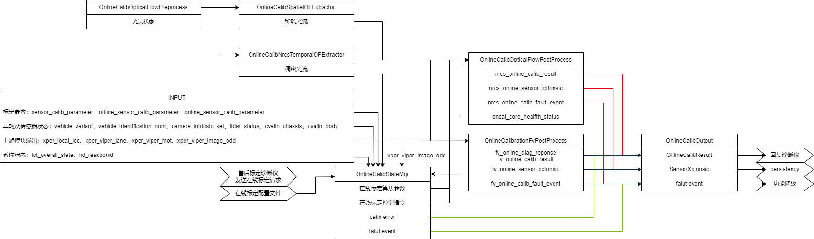
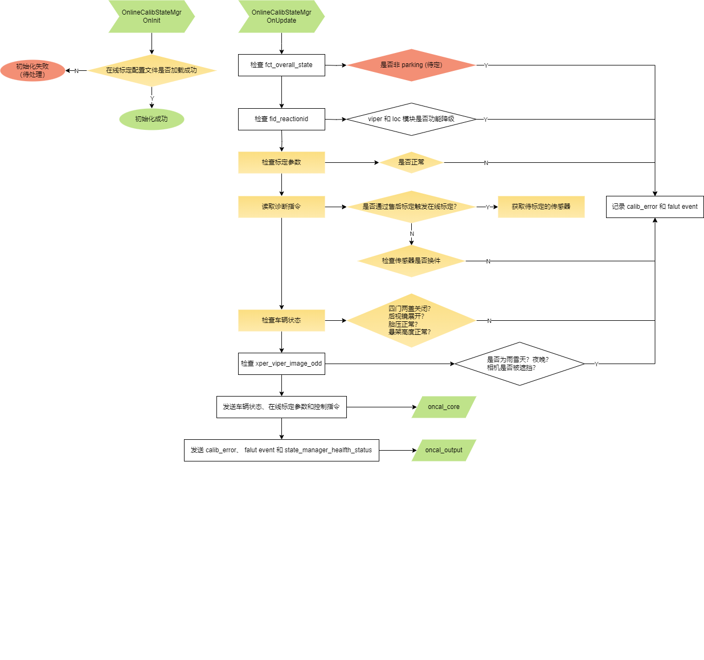
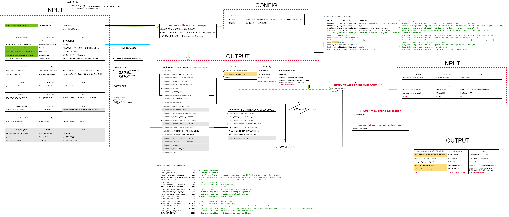
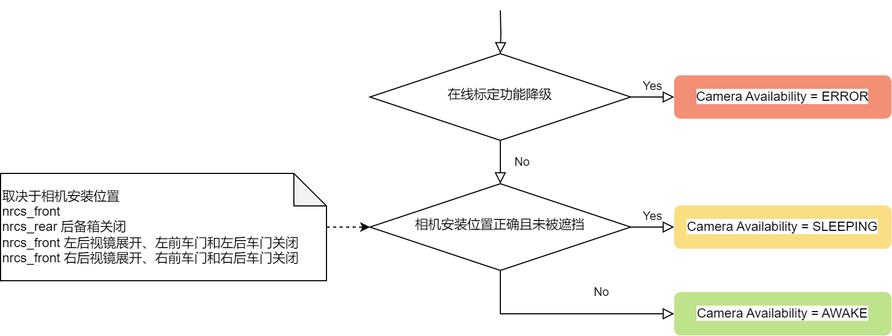
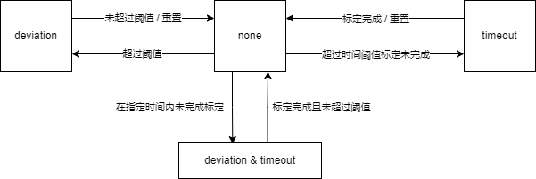
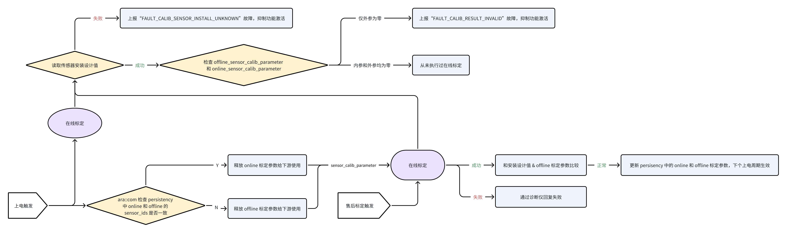
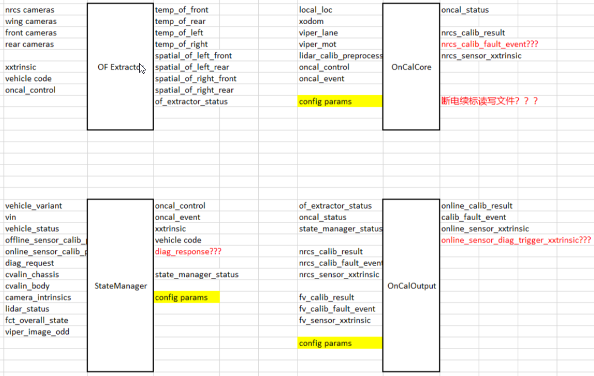

tips for online calibration development
The functions, input output and interconnection of each runnable

OnlineCalibStateMgr
pipeline

design details

CgcmcalibrationStatus analysis
For details, please refer to xcalib-online/C2W/C2W_COMMON/Inc/GCM/GCM_CALIBSTAS_TABS.HPP
|
key information |
description |
example |
define |
|
|
camera availability |
Whether the original input of the camera is normal |
Whether the light flow is normal Whether the camera is blocked |
AWAKE: The camera location is correct, unobstructed and flowing normally Sleeping: The camera position is wrong, blocked or abnormal light flow ERROR: Online calibration function downgrade (suppressed) |
 |
|
calibration state |
Current online calibration status |
Never execute online calibration The previous power -on cycle is completed and the calibration is completed |
Reset Extrinsic: Looking at the camera before and after resetting, it will affect the status of the left and right surrounding camera SET EXTRINSIC: The front and rear -looking camera is transformed into a complete calibration. The left and right surround camera can only be transformed into a complete calibration after the camera is completely calibrated. Start Static Calibration: Reset it directly to undestable |
|
|
calibration error |
Currently fixed errors online |
The difference between the design value of the installation design is exceeded the threshold Calibration timeout |
Deviation: Report super error error, until it is less than the threshold or resubmitted Timeout |
 |
OnlineCalibOutput
Online calibration parameter update strategy

Online calibration Road Conditions, Weather Conditions and driving habits requirements
|
Road conditions |
good |
|
|
bad |
|
|
|
Weather conditions |
good |
|
|
bad |
|
|
|
|
good |
|
|
bad |
|
Reference link
calibration_interface definition Source of calibration_interface.hpp - w3-up1-pub-interface - Sourcecode01 / Sourcecode06 productive system (bosch.com)
Faultevent_types definition Source of faultEvent_types.hpp - w3-up1-pub-interface - Sourcecode01 / Sourcecode06 productive system (bosch.com)
Online calibration related structure definition Online Calibration protocol document - wave 3 development - Docupedia (bosch.com)
